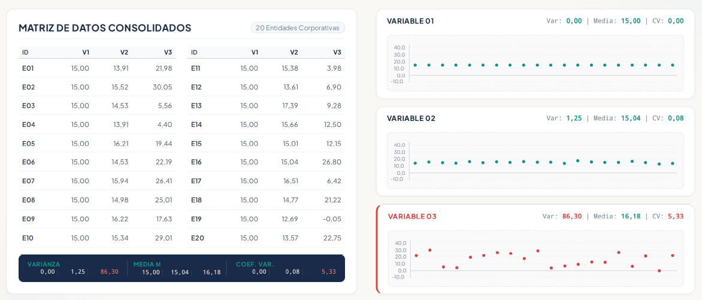
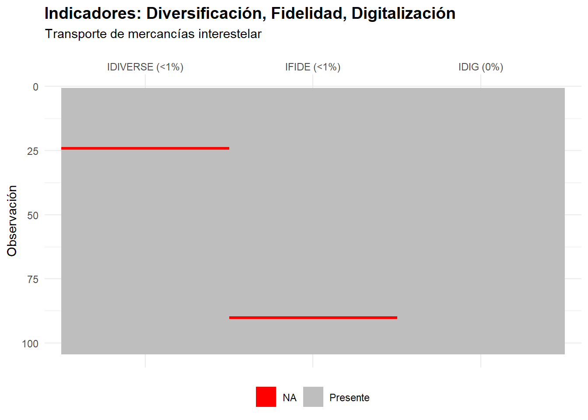
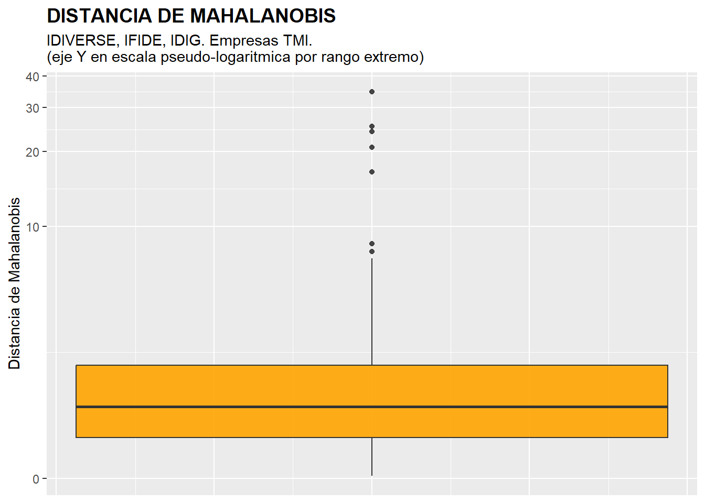
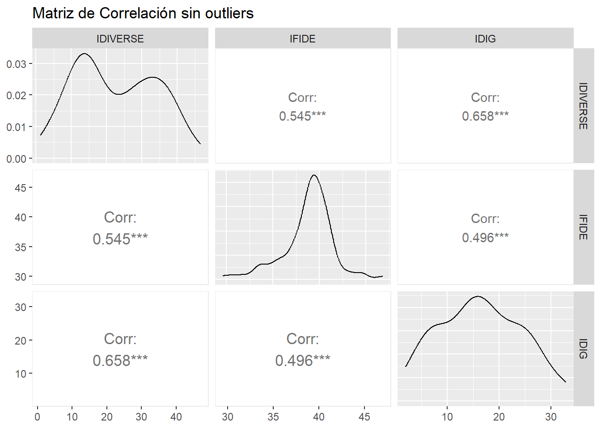
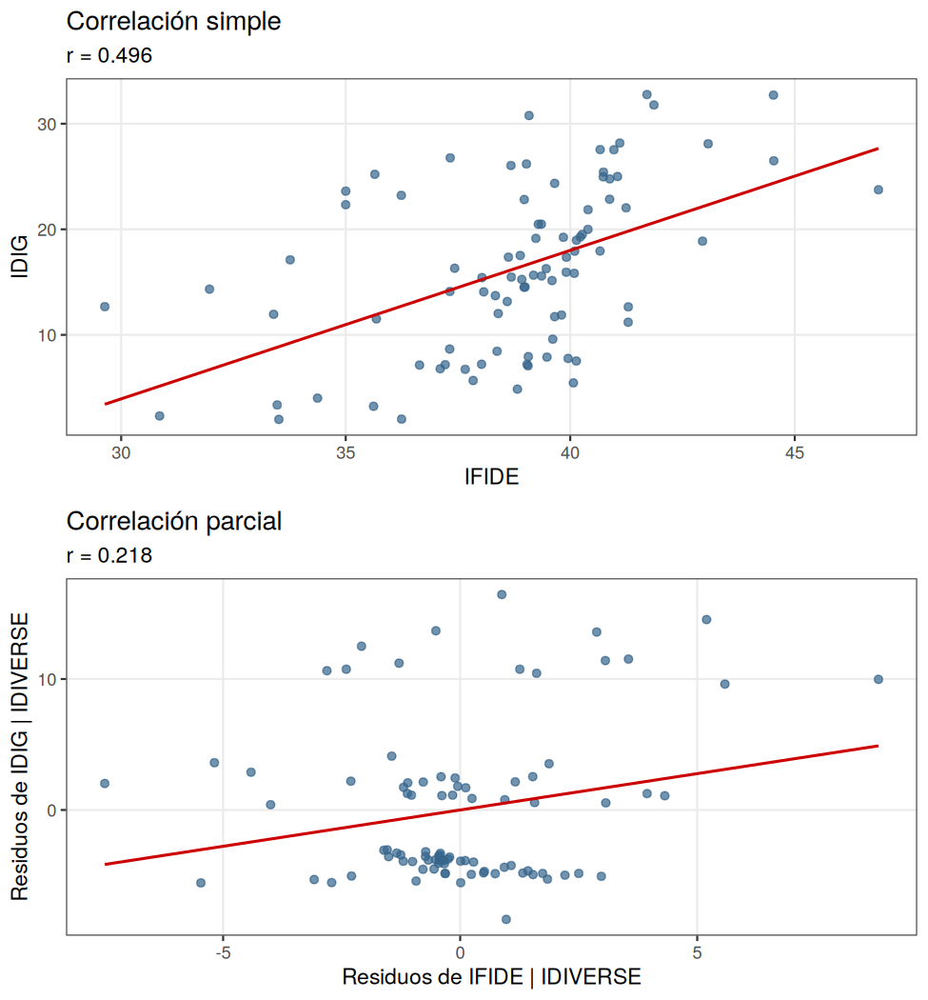
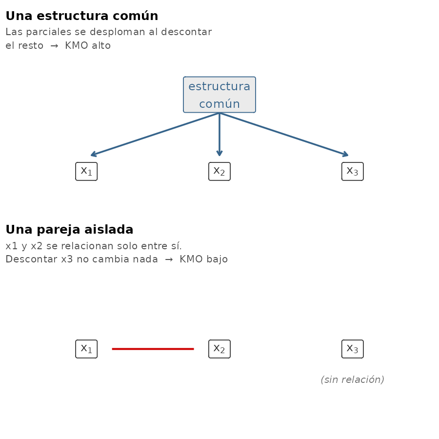
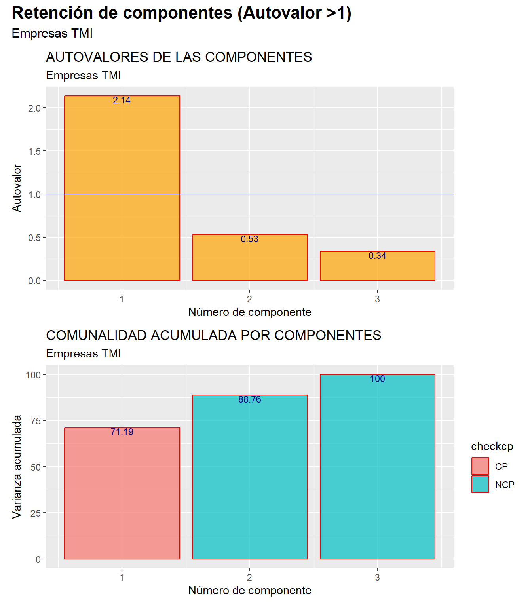
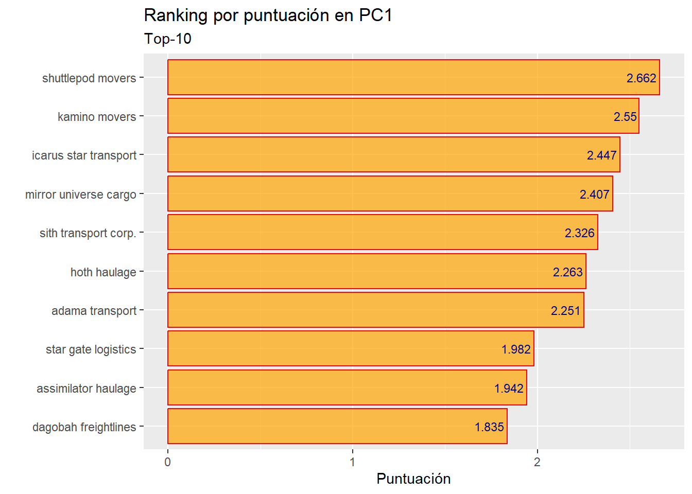

4 Componentes principales.

Figura 4.1. Carguero a dos niveles de resolución.
4.1  Introducción.
Introducción.
A veces, menos es más. Esta es la filosofía que subyace a las técnicas de reducción de la dimensión de la información.
Imaginemos una serie de casos (por ejemplo, las empresas de un sector económico) caracterizados por múltiples variables. Puede ocurrir que, paradójicamente, el contar con tantas variables haga difícil la caracterización de los casos. Esto ocurre cuando algunas de las variables aportan una información muy parecida sobre tales casos. Por ejemplo, es más difícil hacerse una idea del comportamiento global en el ámbito económico o financiero de un grupo de empresas si tenemos que atender a los valores que toman en un conjunto de 10 variables, que si solo tenemos que atender a un par de indicadores.
Las técnicas de reducción de la dimensión de la información tratan, precisamente, de disminuir el número de variables necesarias para caracterizar un grupo de casos, aprovechando la posibilidad de que las (múltiples) variables originales compartan información sobre estos. Es decir, la idea fundamental es pasar de un planteamiento basado en manejar muchas variables con información compartida o redundante (variables que “dicen lo mismo” sobre el comportamiento de los casos) a un planteamiento en el que hay menos variables, pero que no comparten información (variables que “dicen” cosas diferentes sobre el comportamiento de los casos). En este proceso es importante que la pérdida de información sea mínima, y que solo se pierda la información redundante o repetida.
La principal técnica de reducción de la dimensión de la información es la de componentes principales, y es la que se expondrá y ejemplificará en el resto del capítulo. Pero antes, es preciso concretar la relación entre dos conceptos muy presentes en esta técnica: información y varianza.
4.2 Información y varianza.
En el apartado anterior hemos hablado de la posibilidad de que algunas variables compartan “información” sobre el comportamiento de los casos que constituyen nuestra muestra u objeto de estudio. Pero, ¿qué es, en este contexto, la “información”?
La información que una variable contiene sobre un conjunto de casos puede entenderse como su capacidad para diferenciar a unos casos de otros.
Observemos este ejemplo, en el que se representan los valores que toman un grupo de 20 empresas en 3 variables.

Figura 4.2. Información y Varianza
En la variable 1, todas las empresas toman el mismo valor. Por tanto, la capacidad que tiene la variable para distinguir a los casos (empresas), unos de otros, es nula. Eso es debido a que, en definitiva, esta variable no contiene información sobre el grupo de 20 empresas.
En la variable 2, existe cierta dispersión, aunque reducida, en los valores que adoptan los casos. Esto permite distinguir a unos de otros, aunque a veces con cierta dificultad. Por ejemplo, la empresa 17 se distingue del resto por ser la que tiene un valor (un poco) mayor. Aun así, como la dispersión es reducida, no se distinguen algunos casos de otros demasiado bien. En definitiva, la variable 2 contiene cierta cantidad de información sobre el conjunto de empresas de la muestra, aunque no demasiado grande.
Por último, la variable 3 muestra una dispersión considerablemente mayor que las otras dos variables. Existe un amplio abanico de valores que toman los diferentes casos (empresas). Esto hace que puedan diferenciarse con facilidad, en general, unos de otros. Esta variable posee, por tanto, una cantidad de información superior respecto a las empresas, ya que observando los valores que toman en la variable pueden diferenciarse con facilidad unas de otras.
Como conclusión, podemos establecer que cuanto mayor dispersión muestra una variable para un grupo de casos, mayor cantidad de información contiene sobre ellos, en el sentido de disfrutar de un mayor “poder” de diferenciación de unos casos respecto a otros.
Una medida de la dispersión de una variable usualmente utilizada es la varianza. Por tanto, en cierta manera, la varianza sirve para medir la cantidad de información que contiene la variable: a mayor varianza, mayor dispersión. Y a mayor dispersión, mayor cantidad de información.
En el ejemplo, puede observarse cómo la variable 3 es la que mayor varianza tiene, luego la variable 2, y la variable 1 tiene una varianza de 0 (y no posee información sobre las 20 empresas). Esta comparación de varianzas es válida siempre y cuando las tres variables estén expresadas en las mismas unidades, ya que la varianza es una medida de dispersión absoluta. Por ello, para poder comparar, hemos añadido también en el ejemplo una medida de dispersión relativa: el coeficiente de variación. Podemos comprobar cómo el mayor coeficiente de variación pertenece a la variable 3 (que es la que tiene una mayor cantidad de información), luego la variable 2 (que cuenta con menor cantidad de información), y por último la variable 1, con un coeficiente de 0 (no contiene información sobre las empresas).
4.3  La elección de Arg-Us Korp.
La elección de Arg-Us Korp.
Vamos a considerar el caso del sector del “Transporte Interestelar”. Tenemos una selección de 104 empresas o compañías. El “magnate” de los negocios a escala interplanetaria, Arg-us Korp (en la imagen), está de compras: quiere adquirir una de las empresas que mejor proyección a futuro en el sector tenga.

Figura 4.3. Arg-Us Korp.
Entre las variables disponibles en la base de datos, la base de datos interestelar contiene varios indicadores que podrían reflejar la preparación de una empresa para afrontar el futuro: gasto en I+D, edad de la flota, gastos de capital, solvencia, beneficio por año-luz, diversificación, fidelización, digitalización…
Tras consultar con su equipo de analistas, Korp ha seleccionado tres de ellos, los que considera más relevantes para su estrategia de adquisición:
IDIVERSE (Índice de Diversificación): empresas con operaciones diversificadas tienen mayor resiliencia ante cambios del mercado, ya que no dependen de una única fuente de ingresos ni de un solo tipo de carga.
IFIDE (Índice de Fidelización): un alto nivel de fidelización indica relaciones sólidas con los clientes, lo que proporciona estabilidad de ingresos y ventajas competitivas a largo plazo.
IDIG (Índice de Digitalización): la digitalización es clave en la eficiencia operativa y la adaptabilidad tecnológica. Un IDIG elevado sugiere inversión en automatización, software avanzado y optimización de procesos.
Aun así, su equipo sabe que Korp quiere una respuesta precisa. Un nombre de una empresa.
El equipo ha pensado en crear un ranking de compañías basándose en estos tres indicadores. Pero, si tienen 3 variables, ¿cómo combinar su análisis para obtener un solo ranking de modo objetivo? ¿Cómo ponderar las tres variables?
La respuesta ha venido al comprobar que las tres variables guardan entre sí unas correlaciones relativamente altas (en valor absoluto). Es decir: aportan una información bastante parecida sobre cada una de las empresas de la selección. Esto es importante porque, si en gran medida comparten información “redundante”, pueden ser, seguramente, “resumidas” en un solo indicador, cuyo valor o puntuación para cada caso (empresa) podría servir para establecer el ranking de compañías candidatas a ser adquiridas.
El método para obtener este indicador a partir de las tres variables originales se llama Análisis de Componentes Principales (PCA). Ese indicador, que es la clave de toda la estrategia, será la primera “componente” del PCA, una combinación lineal de las tres variables originales; siempre y cuando su poder para “retener” la información global ofrecida por esas tres variables sea lo suficientemente alto.
4.4  Preparación previa de datos.
Preparación previa de datos.
Vamos a suponer que trabajamos dentro de un proyecto que hemos creado previamente, de nombre “componentes”. Dentro de la carpeta del proyecto guardaremos el script “componentes_lite.R” y el archivo de Microsoft® Excel® “interestelar_100.xlsx”, que contiene diferentes variables económicas y financieras de 104 empresas dedicadas a los servicios de transporte interestelar de mercancías.
Comenzaremos con los pasos habituales: limpiar el Global Environment, cargar MATlite, importar los datos y crear un data frame más reducido, al que llamaremos “seleccion”, con las únicas variables del análisis (IDIVERSE, IFIDE e IDIG):
### Análisis de Componentes Principales ###
# Limpiando el Global Environment
rm(list = ls())
# Cargando el paquete de la asignatura
library(MATlite)
## DATOS
interestelar_100 <- lite_importa("interestelar_100.xlsx")
# Seleccionando las variables del análisis
seleccion <- interestelar_100 %>% select(IDIVERSE, IFIDE, IDIG)
lite_resumen(seleccion)| seleccion | ||||||
| 104 rows x 3 cols | ||||||
| Column | Plot Overview | Missing | Mean | Median | SD | |
|---|---|---|---|---|---|---|
| IDIVERSE | 1.0% | 23.8 | 22.4 | 13.2 | ||
| IFIDE | 1.0% | 39.4 | 39.2 | 6.2 | ||
| IDIG | 0.0% | 18.2 | 16.7 | 10.9 | ||
Tabla 4.1
El siguiente paso consistirá en localizar los posibles missing values, ya que para obtener componentes principales es necesario que todos los casos posean dato en todas las variables del análisis. Ante la existencia de missing values, se puede actuar de varios modos. Por ejemplo, se puede intentar obtener el conjunto de valores que no están disponibles por otro canal de información, o recurrir a alguna estimación. En caso de que esto sea difícil, se puede optar, simplemente, por eliminar estos casos, en especial cuando representan un porcentaje muy reducido respecto al total de observaciones. En nuestro ejemplo supondremos que hemos optado por esta última vía.
Recurrimos a la función lite_na(), que ya conocemos. Como “seleccion” solo contiene las variables del análisis, no es necesario indicarlas:
# Diagnóstico y filtrado de missing values.
seleccion <- lite_na(seleccion, accion = "eliminar",
titulo = "Indicadores: Diversificación, Fidelidad, Digitalización",
subtitulo = "Transporte de mercancías interestelar")
Figura 4.4
| IDIVERSE | IFIDE | IDIG | |
|---|---|---|---|
| ezra bridger haulage | NA | 34.11209 | 29.06697 |
| alderaan freight | 35.96067 | NA | 19.10291 |
Tabla 4.2
Del gráfico y de la tabla anteriores se desprende que existen 2 missing values repartidos en 2 de las 3 variables del estudio, correspondientes a las empresas Ezra Bridger Haulage y Alderaan Freight, que quedan eliminadas. Podemos verificar en el Global Environment que el data frame “seleccion” ha pasado a tener 102 casos.
Por otro lado, la técnica de componentes principales es muy sensible a la existencia de outliers. En concreto, las observaciones atípicas pueden afectar a los resultados a través de tres vías:
Distorsión de las componentes principales: pueden influir en la dirección de las componentes principales, haciendo que estas se ajusten más a los valores atípicos que a la mayoría de los datos. Esto puede llevar a una interpretación incorrecta de las relaciones entre las variables.
Afectación a las cargas de las variables: estas cargas son relevantes porque indican la importancia relativa de cada variable original en la formación de la componente, es decir, cuánto contribuye o se correlaciona una variable específica con una componente principal.
Modificación de la varianza explicada: pueden inflar la varianza total de los datos, lo que puede afectar a la proporción de varianza explicada por cada componente principal. Esto puede ocasionar una selección incorrecta del número de componentes a retener.
En consecuencia, deberán ser identificados y, en su caso, eliminados. Como contamos con tres variables métricas, lite_outliers() “resumirá” el valor que toma cada empresa en el conjunto de las variables mediante la distancia de Mahalanobis, sobre la que aplicará la regla de 1,5 veces el rango intercuartílico. El resultado se almacena en un nuevo data frame llamado “seleccion_so”:
# Diagnóstico y filtrado de outliers.
seleccion_so <- lite_outliers(seleccion, accion = "eliminar",
titulo = "DISTANCIA DE MAHALANOBIS",
subtitulo = "IDIVERSE, IFIDE, IDIG. Empresas TMI.")
Figura 4.5
| MAHALANOBIS | IDIVERSE | IFIDE | IDIG | |
|---|---|---|---|---|
| arrakis freight | 34.687429 | 38.8813669 | 73.30230 | 58.5101128 |
| ripley interstellar freight | 25.147548 | 71.3507415 | 40.12974 | 4.4464628 |
| hyperdrive express | 24.045602 | 35.7898130 | 68.14784 | 33.6619031 |
| home one cargo | 20.784784 | 22.1760155 | 46.77635 | 60.8325142 |
| chakotay cargo systems | 16.548312 | 54.3681496 | 64.26013 | 42.7197240 |
| kyber crystal shipping | 8.476561 | 22.6273372 | 30.97667 | 34.0135033 |
| tannhäuser freight | 7.869429 | 47.8884591 | 42.64052 | 8.2092915 |
| io star transport | 7.380454 | 38.0206319 | 33.82858 | 35.1177708 |
| hal intergalactic freight | 7.174817 | 7.4887170 | 31.61145 | 28.1566284 |
| andromeda cargo | 6.445906 | 46.0541586 | 44.98949 | 44.3415811 |
| jovian logistics | 6.337391 | 22.3920052 | 29.77401 | 27.4342295 |
| kobol cargo systems | 5.449331 | 0.7736944 | 39.46283 | 0.6007237 |
| hyperion star haulage | 5.212257 | 11.7150226 | 26.44375 | 13.7407440 |
Tabla 4.3
El gráfico y la tabla anteriores confirman que hay 13 empresas que se comportan como outliers, considerando conjuntamente las tres variables del análisis. El data frame “seleccion_so” contiene los 89 casos restantes (los que no son outliers y no contenían missing values). Con él es con el que se procederá al cálculo de las componentes.
4.5 Correlaciones e idoneidad del análisis.
La condición previa para el cálculo de componentes es que las variables originales del análisis contengan información redundante, es decir, que en buena medida tengan una capacidad para diferenciar a los casos (empresas) parecida. Esto se verifica con la existencia de altas correlaciones, en valor absoluto, entre ellas (al menos, entre algunas). Por tanto, hemos de examinar la matriz de correlaciones:
# Correlaciones.
correlaciones <- lite_correlaciones(seleccion_so,
titulo = "Matriz de Correlación sin outliers")
correlaciones$grafico
Figura 4.6
Puede apreciarse cómo existen altas correlaciones (en valor absoluto) entre todas las variables. Por tanto, tiene sentido hacer un análisis de componentes principales, ya que hay variables que parecen compartir información.
Ahora bien, este diagnóstico es visual y, en buena medida, subjetivo: ¿a partir de qué valor consideramos que una correlación es “alta”? ¿Y qué hacemos si unas variables correlacionan mucho y otras poco? Afortunadamente, existe una medida objetiva que ayuda a responder a estas preguntas: la medida de adecuación muestral KMO (Kaiser-Meyer-Olkin), heredada de la tradición del análisis factorial, y que se calcula siempre antes de extraer las componentes.
Su filosofía es la siguiente. El KMO compara la magnitud de las correlaciones simples entre las variables con la de las correlaciones parciales, esto es, las que quedan entre cada par de variables una vez descontado el efecto del resto. El razonamiento es que, si las variables comparten una estructura común —que es justamente lo que una componente trata de capturar—, al descontar el efecto de las demás la correlación entre dos de ellas debería reducirse mucho. En ese caso las correlaciones parciales serán pequeñas frente a las simples, y el KMO tomará un valor próximo a 1. Si, por el contrario, cada par de variables correlaciona “por su cuenta”, las parciales seguirán siendo altas y el KMO se aproximará a 0. Formalmente:
\[ \text{KMO} = \frac{\sum_{i \neq j} r_{ij}^{2}}{\sum_{i \neq j} r_{ij}^{2} + \sum_{i \neq j} a_{ij}^{2}} \]
donde \(r_{ij}\) son las correlaciones simples entre cada par de variables, y \(a_{ij}\) las correlaciones parciales (los elementos de la denominada matriz anti-imagen).
Qué es, exactamente, una correlación parcial. Conviene detenerse en este concepto, porque es la pieza sobre la que descansa todo el indicador. Una correlación parcial no responde a una fórmula distinta de la ordinaria: es una correlación corriente, calculada sobre los restos. Para obtener la que existe entre dos variables una vez descontado el efecto de una tercera, el procedimiento consta de tres pasos:
- Se regresa la primera variable sobre la tercera, y se guardan los residuos: la parte de la primera que la tercera no consigue explicar.
- Se hace lo mismo con la segunda variable.
- Se correlacionan ambos vectores de residuos. Eso es la correlación parcial.
Podemos comprobarlo con nuestros propios datos. La correlación entre IFIDE (fidelización) e IDIG (digitalización) es apreciable; pero si descontamos de ambas el efecto de IDIVERSE (diversificación) y correlacionamos lo que queda, el resultado cambia radicalmente:

Figura 4.7. Correlación simple frente a correlación parcial entre IFIDE e IDIG, descontando el efecto de IDIVERSE.
La correlación pasa de 0,496 a 0,218: cae un 56 %. Dicho en términos económicos, la fidelización y la digitalización se relacionan, en buena medida, a través de la diversificación. Una vez descontada esta, lo que queda de relación directa entre aquellas dos es mucho más débil. Ese desplome es, precisamente, la señal que el KMO busca.
Y es también lo que distingue las dos situaciones que el indicador pretende separar:

Figura 4.8. Las dos situaciones que distingue el KMO: una estructura común a todas las variables frente a una pareja de variables aislada.
A la izquierda, todas las variables son manifestaciones de una misma dimensión subyacente —que es lo que una componente principal trata de capturar—, de modo que al descontar unas de otras la relación directa se evapora. A la derecha, en cambio, las variables se emparejan por su cuenta, en bloques independientes: descontar las ajenas no altera nada, las parciales siguen siendo altas y el KMO se desploma.
La diferencia no es un tecnicismo. El PCA promete resumir muchas variables en pocas, y eso solo funciona si existe una dimensión compartida por todas. Si lo que hay son parejas sueltas, haría falta una componente por pareja: no se habría reducido nada.
Kaiser propuso la siguiente escala para interpretar el resultado:
KMO ≥ 0.90: excelente.
0.80 ≤ KMO < 0.90: notable.
0.70 ≤ KMO < 0.80: aceptable.
0.60 ≤ KMO < 0.70: mediocre.
0.50 ≤ KMO < 0.60: bajo.
KMO < 0.50: inaceptable (no debería plantearse el análisis).
Junto a este KMO global, que se refiere al conjunto del análisis, puede calcularse un KMO individual para cada variable: es la medida MSA (Measure of Sampling Adequacy). Resulta muy útil en la práctica, porque permite detectar variables que no encajan en la estructura común del conjunto: si alguna presenta un MSA inferior a 0.50, lo razonable es plantearse excluirla del análisis y recalcular.
Ambas medidas, y todo lo que necesitamos para el resto del análisis, se obtienen con la función lite_acp(). Le indicamos el data frame con el que vamos a calcular las componentes (“seleccion_so”) y, si queremos, un subtítulo para sus gráficos. Guardaremos el resultado en el objeto “componentes”:
# Componentes principales
componentes <- lite_acp(seleccion_so, subtitulo = "Empresas TMI")La adecuación muestral queda en la pieza kmo:
componentes$kmo| Medida | Valor | Interpretación |
|---|---|---|
| KMO global | 0.688 | mediocre |
| MSA: IDIVERSE | 0.649 | Adecuada |
| MSA: IFIDE | 0.773 | Adecuada |
| MSA: IDIG | 0.672 | Adecuada |
Tabla 4.4
En nuestro caso, el KMO global asciende a 0.688, un valor que la escala de Kaiser califica como mediocre: queda algo por debajo del umbral de 0.70 que marcaría una adecuación claramente aceptable, pero bastante por encima del 0.50 a partir del cual habría que descartar el análisis. Dicho de otro modo, las tres variables comparten información suficiente para justificar el PCA, aunque no estemos ante un caso de libro. Conviene no perder de vista, en este sentido, que solo manejamos tres variables, de modo que cada correlación parcial se calcula descontando el efecto de una única variable.
En cuanto a los MSA individuales, los tres superan con holgura el umbral de 0.50 —el menor corresponde a IDIVERSE, con 0.649—, por lo que ninguna de las variables desentona del conjunto y no hay motivo para excluir a ninguna del análisis.
Conviene cerrar el apartado con una precisión. El KMO nació en el ámbito del análisis factorial, una técnica emparentada con el PCA, pero no idéntica. El análisis de componentes principales es, en esencia, una técnica descriptiva: no exige supuestos distribucionales ni pretende inferir una estructura latente, por lo que, en rigor, ningún indicador “autoriza” o “prohíbe” su aplicación. El KMO debe entenderse, por tanto, como una ayuda a la decisión que complementa —pero no sustituye— al examen de la matriz de correlaciones y al criterio del analista.
4.6 Cálculo de componentes.
lite_acp() calcula las componentes a partir de las versiones tipificadas de las variables originales, de modo que todas ellas pesan lo mismo con independencia de sus unidades de medida. El primer resultado que conviene examinar es la cantidad de información (varianza) que recoge cada componente:
componentes$varianza| Componente | Desv. típica | Proporción de varianza (comunalidad) | Proporción de varianza (comunalidad) acumulada |
|---|---|---|---|
| PC1 | 1.46 | 0.71 | 0.71 |
| PC2 | 0.73 | 0.18 | 0.89 |
| PC3 | 0.58 | 0.11 | 1.00 |
Tabla 4.5
La “desviación típica” es la raíz cuadrada de los autovalores asociados a cada componente. La “proporción de varianza” nos dice la proporción de la suma de varianzas de las variables originales (comunalidad) recogida por cada componente, proporción que se acumula en la última columna. Nótese que las componentes aparecen ordenadas de más a menos importantes en función de la cantidad de varianza que capturan.
En este caso, podemos destacar que la primera componente recoge más del 71% de la varianza (comunalidad) o información puesta en juego globalmente por las tres variables originales. Las dos primeras componentes, en conjunto, aglutinan casi el 89% de la información que las tres variables ofrecen sobre el comportamiento de las empresas. Entre las tres componentes, lógicamente se recoge el 100% de la comunalidad o varianza global.
Los coeficientes o cargas de cada componente están en la pieza cargas:
componentes$cargas| PC1 | PC2 | PC3 | |
|---|---|---|---|
| IDIVERSE | 0.601 | 0.273 | 0.752 |
| IFIDE | 0.544 | -0.828 | -0.135 |
| IDIG | 0.586 | 0.490 | -0.646 |
Tabla 4.6
En la tabla, se muestran las cargas (loads), que son los coeficientes que intervienen en las combinaciones lineales que definen cada componente, a partir de las variables originales (tipificadas). Por tanto, con base en las cargas se pueden explicitar las ecuaciones correspondientes a cada componente. Por ejemplo, para la primera componente, la ecuación será:
\[ \text{CP}_{i1} = 0.6006 \cdot \text{IDIVERSE}_{i1} + 0.5442 \cdot \text{IFIDE}_{i1} + 0.5858 \cdot \text{IDIG}_{i1} \]
Puede observarse que, en cuanto a la primera componente, que es la que especialmente nos interesa como indicador de la “preparación de las diferentes compañías de transporte para afrontar el futuro”, las 3 cargas tienen signo positivo, lo que implica que, cuanto mayores sean los valores de una empresa en las variables IDIVERSE (índice de diversificación), IFIDE (índice de fidelidad) e IDIG (índice de digitalización), mayor será el valor del indicador y, por tanto, su preparación. Además, como las variables fueron tipificadas, los valores de las cargas son comparables. De este modo, vemos cómo, dentro de la primera componente, que es la que adoptamos como indicador, la mayor importancia la tiene IDIVERSE, seguido de IDIG y, por último, IFIDE.
4.7 Retención de componentes.
La etapa de retención de componentes consiste en decidir cuántas de las componentes generadas (recordemos que, en un principio, se calculan tantas componentes como variables originales) consideramos que resumen de un modo aceptable la información contenida en las variables originales. Estas componentes “retenidas” se convertirán en las componentes principales.
La primera componente siempre es retenida y, por tanto, es una “componente principal”. El resto, que van capturando proporciones cada vez menores de la varianza común de las variables originales (comunalidad), podrán o no retenerse; aunque, siempre, la retención de una componente implica que se han retenido todas las anteriores. En este caso práctico, buscamos un único indicador de la “preparación de las diferentes compañías de transporte para afrontar el futuro”, por lo que solo vamos a “retener” la primera componente. En otras aplicaciones, podría ser necesario retener varias para recoger la suficiente comunalidad.
Hay varios procedimientos o criterios para decidir cuántas componentes retener. Uno de ellos, comúnmente aplicado, es el de retener aquellas componentes cuyo autovalor es mayor que 1 (suponiendo que se ha trabajado con las variables en sus versiones tipificadas). Los autovalores son el cuadrado de las desviaciones típicas de las componentes. lite_acp() los representa en un gráfico de barras, junto con el porcentaje de varianza acumulada al ir reteniendo las sucesivas componentes:
componentes$retencion
Figura 4.9
En el gráfico superior, las componentes cuyas barras atraviesan la línea que pasa por el valor “1” son las que deberían ser retenidas, ya que son las componentes que resumen de modo suficiente la información ofrecida sobre el comportamiento de los casos por las variables originales. En este caso, basta con retener solo la primera componente (por lo tanto, solo contamos con una componente principal). Este es un resultado favorable cara a nuestro propósito, ya que nos indica que podemos usar como indicador solo una componente, la primera, y con ella resumiremos suficientemente las tres variables originales. Por tanto, es un buen indicador, en ese sentido.
El gráfico inferior muestra el porcentaje de varianza total (comunalidad) acumulada, un resultado que ya se obtuvo en forma de tabla. Las barras de las componentes que cumplen el criterio aparecen marcadas como “CP” (componente principal) y las demás, como “NCP”.
Una vez confirmado el hecho de que la primera componente es suficiente para contar con un buen indicador de “preparación de las diferentes compañías de transporte para afrontar el futuro”, considerando los aspectos de digitalización, diversificación y fidelización de clientes, pasaremos a estudiar qué casos concretos ofrecen mejores (mayores) valores en el indicador, para lo cual hemos de calcular sus puntuaciones.
4.8 Puntuaciones de los casos (scores).
Las puntuaciones de cada caso (empresa) en el indicador de “preparación de las diferentes compañías de transporte para afrontar el futuro” (nuestra componente principal, que coincide con la primera componente) se obtienen con la función lite_acp_ranking(), que ordena las empresas de mayor a menor puntuación y presenta las 10 primeras:
# Puntuaciones (scores) y ranking
ranking <- lite_acp_ranking(componentes)
ranking$ranking| Caso | Puntuación | IDIVERSE | IFIDE | IDIG |
|---|---|---|---|---|
| shuttlepod movers | 2.662 | 40.677 | 43.071 | 28.098 |
| kamino movers | 2.550 | 26.602 | 44.526 | 32.715 |
| icarus star transport | 2.447 | 35.055 | 41.709 | 32.762 |
| mirror universe cargo | 2.407 | 43.021 | 41.104 | 28.170 |
| sith transport corp. | 2.326 | 33.559 | 41.863 | 31.774 |
| hoth haulage | 2.263 | 46.547 | 42.946 | 18.875 |
| adama transport | 2.251 | 42.547 | 40.666 | 27.549 |
| star gate logistics | 1.982 | 40.135 | 40.740 | 25.417 |
| assimilator haulage | 1.942 | 23.746 | 44.533 | 26.489 |
| dagobah freightlines | 1.835 | 16.902 | 46.864 | 23.744 |
Tabla 4.7
ranking$grafico
Figura 4.10
De la tabla y gráfico anteriores podemos concluir que las empresas más preparadas para afrontar el futuro, según nuestro indicador (primera componente del análisis PCA) son, por este orden, Shuttlepod Movers, Kamino Movers e Ícarus Star Transport.
¿Seguro?
Este ranking se ha elaborado a partir de las compañías que formaron la muestra para realizar el análisis de componentes principales. Estas empresas eran aquellas que tenían dato en las tres variables originales y que no habían sido calificadas como outliers. Los outliers se apartaron de la muestra para evitar distorsiones y sesgos en el análisis. Pero una cuestión que podríamos plantearnos es si, una vez calculadas las combinaciones lineales que son las componentes sin su influencia, podrían ser ahora, en virtud de esas componentes calculadas, puntuadas. Que una compañía se comporte como outlier en una o varias de las variables originales, y no se cuente con ella a la hora de calcular las componentes; no quiere decir necesariamente que no sea una buena candidata a ser la elegida para ser adquirida por su preparación para afrontar el futuro (incluso podría concluirse que en algún aspecto está “especialmente preparada”).
Para puntuarlas basta con indicar a lite_acp_ranking(), con el argumento datos, el data frame que todavía conserva a los outliers (“seleccion”):
# Puntuando también a los outliers
ranking_todas <- lite_acp_ranking(componentes, datos = seleccion)
ranking_todas$ranking| Caso | Puntuación | IDIVERSE | IFIDE | IDIG |
|---|---|---|---|---|
| arrakis freight | 10.695 | 38.881 | 73.302 | 58.510 |
| chakotay cargo systems | 8.580 | 54.368 | 64.260 | 42.720 |
| hyperdrive express | 7.695 | 35.790 | 68.148 | 33.662 |
| home one cargo | 4.834 | 22.176 | 46.776 | 60.833 |
| andromeda cargo | 4.516 | 46.054 | 44.989 | 44.342 |
| shuttlepod movers | 2.662 | 40.677 | 43.071 | 28.098 |
| kamino movers | 2.550 | 26.602 | 44.526 | 32.715 |
| icarus star transport | 2.447 | 35.055 | 41.709 | 32.762 |
| mirror universe cargo | 2.407 | 43.021 | 41.104 | 28.170 |
| sith transport corp. | 2.326 | 33.559 | 41.863 | 31.774 |
Tabla 4.8
Vemos como el ranking cambia radicalmente, y pasa a estar encabezado por las compañías Arrakis Freight, Chakotay Cargo Systems e Hyperdrive Express. Si un análisis particularizado de estas empresas por parte del equipo encargado del estudio da como resultado que sus datos son correctos, serían, seguramente, las candidatas para ser adquiridas por el magnate Arg-Us Korp.
4.9 Efecto de los outliers en las puntuaciones.
Cabe hacerse una pregunta antes de cerrar esta historia. ¿Qué hubiera ocurrido si se hubieran calculado las componentes sin eliminar los outliers previamente? ¿Hubieran cambiado los resultados? ¿era tan relevante el efecto de estos casos sobre los resultados, como comentamos al comienzo del tema, en la parte teórica?
Con MATlite es muy sencillo comprobarlo: basta con repetir el cálculo sobre el data frame “seleccion”, que conserva los outliers:
# Componentes calculadas CON los outliers
componentes2 <- lite_acp(seleccion, subtitulo = "Empresas TMI (con outliers)")
ranking2 <- lite_acp_ranking(componentes2)
ranking2$ranking| Caso | Puntuación | IDIVERSE | IFIDE | IDIG |
|---|---|---|---|---|
| arrakis freight | 5.999 | 38.881 | 73.302 | 58.510 |
| chakotay cargo systems | 4.962 | 54.368 | 64.260 | 42.720 |
| hyperdrive express | 4.044 | 35.790 | 68.148 | 33.662 |
| home one cargo | 2.930 | 22.176 | 46.776 | 60.833 |
| andromeda cargo | 2.892 | 46.054 | 44.989 | 44.342 |
| shuttlepod movers | 1.606 | 40.677 | 43.071 | 28.098 |
| mirror universe cargo | 1.526 | 43.021 | 41.104 | 28.170 |
| icarus star transport | 1.491 | 35.055 | 41.709 | 32.762 |
| adama transport | 1.431 | 42.547 | 40.666 | 27.549 |
| kamino movers | 1.391 | 26.602 | 44.526 | 32.715 |
Tabla 4.9
Como puede repararse, los cambios, en este caso, no parecen ser relevantes. Solo a partir de la séptima posición se registran cambios en el orden de las empresas.
4.10 La decisión de Arg-Us Korp.
¿Cuál de los rankings elegiríamos? La elección no es trivial, y depende de la confianza que tengamos en la calidad de los datos.
Conviene reparar, eso sí, en que el primer ranking no es comparable con los demás. Se elaboró únicamente sobre las 89 compañías que entraron en el cálculo, de modo que las trece calificadas como atípicas no podían figurar en él: no es que obtuvieran peores puntuaciones, es que sencillamente no se las puntuó. Por eso lo encabezan Shuttlepod Movers, Kamino Movers e Ícarus Star Transport, que son las mejor preparadas del núcleo del sector.
En cuanto se permite puntuar a todas las compañías —ya sea aplicándoles las componentes calculadas sin ellas, ya sea incluyéndolas en el propio cálculo—, el panorama cambia, y lo hace de forma consistente: Arrakis Freight encabeza la clasificación, seguida de Chakotay Cargo Systems y de Hyperdrive Express. No es casualidad que Arrakis lidere: Arrakis Freight presenta valores muy por encima de la media del sector en las tres dimensiones consideradas —diversificación, fidelización y digitalización—, y es justamente esa combinación excepcional la que la había convertido en un caso atípico.
La conclusión metodológica es, quizá, la más valiosa del capítulo: la decisión sobre los outliers no es un detalle de depuración previa, sino que determina la respuesta. Si Korp se niega a considerar a las empresas atípicas, su candidata es Shuttlepod Movers; si acepta considerarlas, una vez verificado que sus datos son correctos, su candidata es Arrakis Freight.
Queda, con todo, una última lección, y esta ya no es estadística. Un ranking ordena; no decide. El indicador que hemos construido mide la preparación de cada compañía para afrontar el futuro, pero no sabe nada de quién está dispuesto a vender, ni a qué precio, ni de qué encaja con lo que el comprador ya tiene. Esas restricciones no están en los datos, y son precisamente las que convierten una clasificación en una operación.
Cuentan las crónicas que Arg-us Korp, con el informe de su equipo sobre la mesa —los rankings que puntuaban a todas las compañías—, fue tachando nombres de arriba abajo:
Arrakis Freight, la primera, no estaba en venta ni lo iba a estar: pertenece a Romulus Steiner, el único magnate del sector con una fortuna comparable a la de Korp y un temperamento notoriamente peor. Dicen que respondió a la oferta con un mensaje de tres palabras que la agencia nunca ha hecho público.
Chakotay Cargo Systems, la segunda, es una cooperativa de tripulaciones: sus estatutos prohíben la venta de la compañía a un propietario único, y su extraordinario índice de fidelización se sostiene justamente sobre ese modelo de propiedad. Comprarla habría significado destruir aquello que la hacía valiosa.
Hyperdrive Express, la tercera, tiene arrendada la totalidad de su flota. Su puntuación es legítima —fideliza, diversifica y digitaliza—, pero adquirirla equivalía a comprar una cartera de contratos de alquiler más que una naviera.
La siguiente, cuarta en los rankings, era Home One Cargo. Y ahí se detuvo Korp.
La elección no fue un premio de consolación. El grupo de Korp ya era grande y diversificado: lo que le faltaba no eran rutas ni clientes, sino tecnología. Y Home One Cargo posee el mayor índice de digitalización de toda la muestra (60,8 puntos, frente a una media sectorial de 18,2), sostenido por una plataforma propia de gestión de flotas desplegable en el resto del grupo. Su diversificación moderada, que en el ranking la penalizaba, dejaba de ser un defecto en este contexto: la diversificación la ponía el comprador.
Así que Arg-us Korp —siguiendo los consejos de su equipo de analistas, armados con R y un buen análisis de componentes principales— adquirió Home One Cargo pocas semanas después. El precio de la operación no se ha hecho público, pero los analistas del sector coinciden en que fue una compra inteligente: pagó por una compañía que ningún ranking subía al podio y se llevó exactamente la pieza que le faltaba. Korp, fiel a su estilo, cerró la reunión de adquisición antes de que nadie más pudiera hablar.
4.11  Materiales para realizar las prácticas del capítulo.
Materiales para realizar las prácticas del capítulo.
En esta sección se muestran los links de acceso a los diferentes materiales (scripts, datos…) necesarios para llevar a cabo los contenidos prácticos del capítulo.
Datos (en formato Microsoft® Excel®):
- interestelar_100.xlsx (obtener aquí), o bien, desde R:
lite_datos("interestelar_100").
Script:
- componentes_lite.R (obtener aquí)